<title>One-Screen Options</title>
<meta name="claude:viewport-fit-sides" content="cover">
<link rel="stylesheet" href="https://fonts.googleapis.com/css2?family=Inter:wght@400;500;600;700&family=Space+Grotesk:wght@500;600&display=swap">
<style>
/* Before and after, one pair a row, with what fits counted beside each. */
:root { --bg:#f3f4f6; --fg:#16191d; --muted:#5b6370; --panel:#ffffff; --line:#d9dde3; --accent:#1f8fa8; --bad:#b4561f; --good:#2f8a4e;
  --display:"Space Grotesk",Inter,system-ui,sans-serif; --body:Inter,system-ui,sans-serif; }
@media (prefers-color-scheme: dark) { :root:not([data-theme="light"]) { --bg:#0f1215; --fg:#e8ebee; --muted:#98a1ad; --panel:#171b20; --line:#2a3038; --accent:#5cc4dc; --bad:#f0a070; --good:#7fd39a; color-scheme:dark } }
:root[data-theme="dark"] { --bg:#0f1215; --fg:#e8ebee; --muted:#98a1ad; --panel:#171b20; --line:#2a3038; --accent:#5cc4dc; --bad:#f0a070; --good:#7fd39a; color-scheme:dark }
body { background:var(--bg); color:var(--fg); font:15px/1.55 var(--body); padding-left:max(16px,env(safe-area-inset-left,0px)); padding-right:max(16px,env(safe-area-inset-right,0px)); padding-block:32px 56px }
main { max-width:1180px; margin:0 auto; display:grid; gap:40px }
h1 { font:600 2rem/1.15 var(--display); margin:0; text-wrap:balance }
h2 { font:600 1.3rem/1.3 var(--display); margin:0 0 6px; text-wrap:balance }
p { margin:0; max-width:72ch }
.lede { color:var(--muted); margin-top:8px }
section { display:grid; gap:14px }
.pair { display:grid; grid-template-columns:1fr 1fr; gap:14px }
@media (max-width:760px) { .pair { grid-template-columns:1fr } }
figure { margin:0; background:var(--panel); border:1px solid var(--line); border-radius:10px; overflow:hidden; min-width:0 }
figure img { display:block; width:100%; height:auto }
figcaption { padding:10px 12px; font-size:.92rem; display:grid; gap:2px }
.tag { font:600 .72rem/1 var(--body); letter-spacing:.08em; text-transform:uppercase }
.before .tag { color:var(--bad) } .after .tag { color:var(--good) }
.count { font-weight:600 }
.muted { color:var(--muted) }
table { border-collapse:collapse; width:100%; font-size:.93rem }
.wrap { overflow-x:auto; background:var(--panel); border:1px solid var(--line); border-radius:10px }
th, td { text-align:left; padding:8px 12px; border-bottom:1px solid var(--line); vertical-align:top }
th { font-weight:600; color:var(--muted); font-size:.82rem; letter-spacing:.03em }
tr:last-child td { border-bottom:0 }
ul { margin:0; padding-left:1.2em; max-width:72ch } li { margin:4px 0 }
kbd { font:600 .85em var(--body); border:1px solid var(--line); border-radius:4px; padding:0 5px; background:var(--panel) }
</style>
<main>
<header>
  <h1>Options, keys and campaign on one screen</h1>
  <p class="lede">The parts all three researchers agreed on, built while you pick the shop, the main menu and the command card. Every picture is the game's own window, drawn by <code>larder-world look=</code> at the size named, in the RTS control mode (its key list is 48 lines; the squad mode's is 49). "200% on 1080 lines" is 1000 x 562 UI units, the worst 16:9 case.</p>
</header>

<section>
  <h2>What fits</h2>
  <div class="wrap"><table>
    <tr><th>Page</th><th>Before, 200% on 1080 lines</th><th>After, 200% on 1080 lines</th><th>After, the window as it opens (1600 x 972 at 125%)</th></tr>
    <tr><td>Options</td><td>5 of 17 settings whole; two notes cut short; Back and All to defaults below the fold</td><td>Three tabs (5, 4 and 8 settings), each whole on one screen; the focused setting's note in full beside them</td><td>The same, every tab whole</td></tr>
    <tr><td>Keys</td><td>13 of 48 lines, one column, scrolling</td><td>Two columns, 2 pages, nothing cut</td><td>1 page, all 48 lines whole; 2 pages in the squad mode (before: all 48 in two columns, three cut short, a little scrolling)</td></tr>
    <tr><td>Campaign</td><td>5 of 8 missions whole; Back below the fold</td><td>All 8 on one-line rows, the pointed-at mission in full beside them</td><td>All 8</td></tr>
  </table></div>
  <p class="muted">Two tests hold this: one checks every word on these pages at eight screen sizes (on screen, none touching another, none under 12.5 units, nothing scrolling); the other checks the game's own lists, so every Options tab and the campaign stay one page and the keys three pages at most, at 200% on 1080, 720 and 540 lines, 175% on a 1280 x 800 laptop and 125% in the opening window.</p>
</section>

<section>
  <h2>Options</h2>
  <p>Tabs across the top: Game, Planet, The mould, and Keys last. <kbd>Tab</kbd> moves along them. Each setting is one line with its value between arrows; a dot after the name marks one moved off its default. The note on the right shows the setting under the mouse, else the one the keyboard is on, with its default and a button back to it.</p>
  <div class="pair">
    <figure class="before">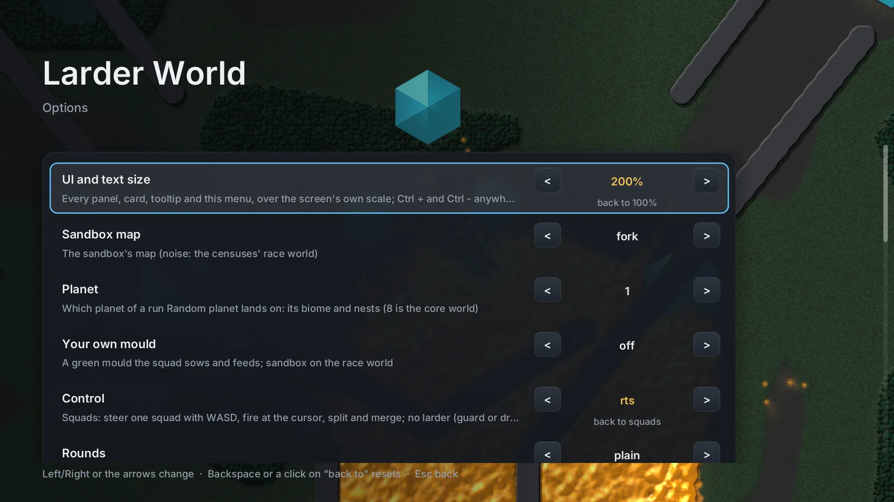<figcaption><span class="tag">Before</span><span class="count">5 of 17 settings visible</span><span class="muted">Title and subtitle take the top 160 units; notes cut to one line</span></figcaption></figure>
    <figure class="after">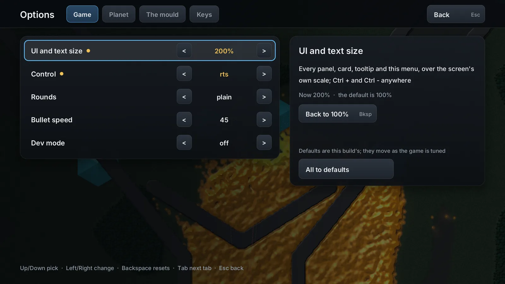<figcaption><span class="tag">After</span><span class="count">Game tab: 5 of 5</span><span class="muted">The UI size and Control are moved off their defaults (dots)</span></figcaption></figure>
    <figure class="after">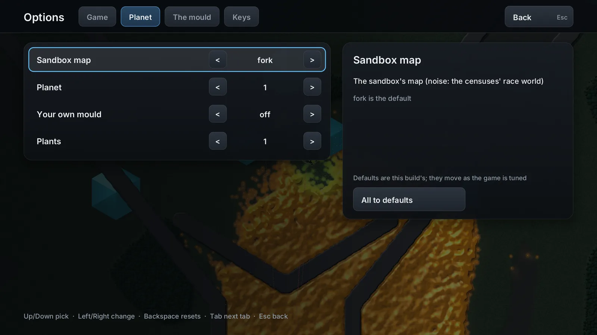<figcaption><span class="tag">After</span><span class="count">Planet tab: 4 of 4</span></figcaption></figure>
    <figure class="after">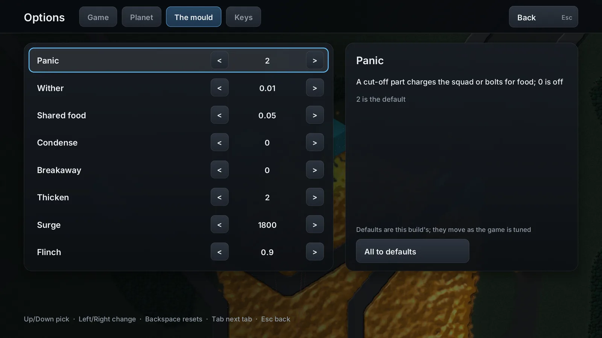<figcaption><span class="tag">After</span><span class="count">The mould tab: 8 of 8</span><span class="muted">The longest tab</span></figcaption></figure>
  </div>
</section>

<section>
  <h2>Keys</h2>
  <p>The key list is Options' last tab (F1 or ? still opens it from anywhere, and Back returns there). Two columns; a list longer than the screen turns pages with the arrows at the bottom right, <kbd>Left</kbd>/<kbd>Right</kbd> or <kbd>Page Up</kbd>/<kbd>Page Down</kbd>.</p>
  <div class="pair">
    <figure class="before">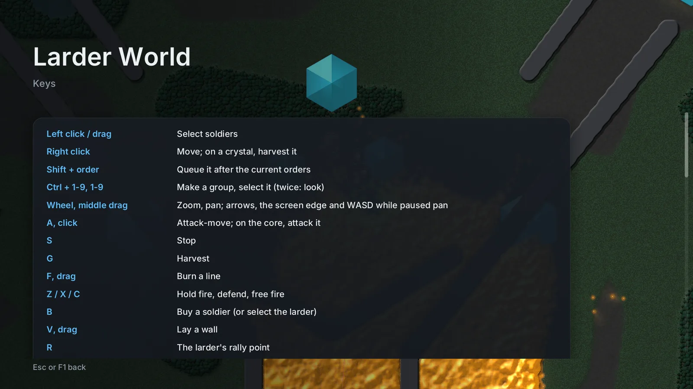<figcaption><span class="tag">Before</span><span class="count">13 of 48 lines visible</span></figcaption></figure>
    <figure class="after">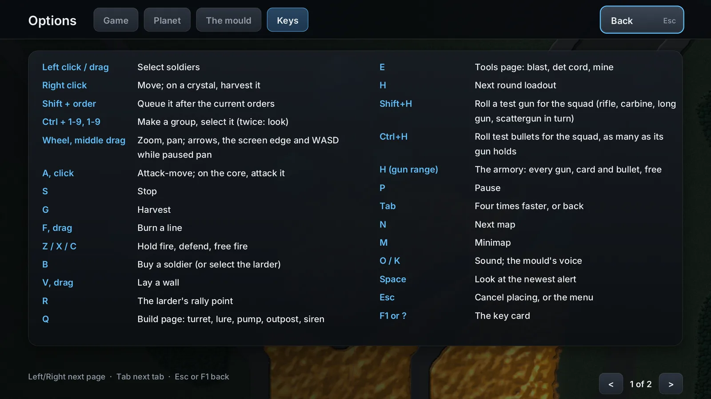<figcaption><span class="tag">After</span><span class="count">Page 1 of 2, 27 of 48 lines</span><span class="muted">Long lines wrap rather than being cut</span></figcaption></figure>
  </div>
</section>

<section>
  <h2>Campaign</h2>
  <p>One line a mission, its map and mould at the right. The mission under the mouse, else the keyboard's, is told in full on the right. A list longer than the screen would page like the keys.</p>
  <div class="pair">
    <figure class="before">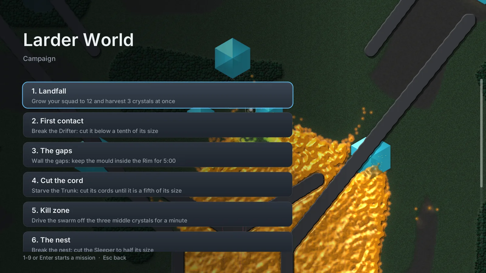<figcaption><span class="tag">Before</span><span class="count">5 of 8 missions visible</span></figcaption></figure>
    <figure class="after">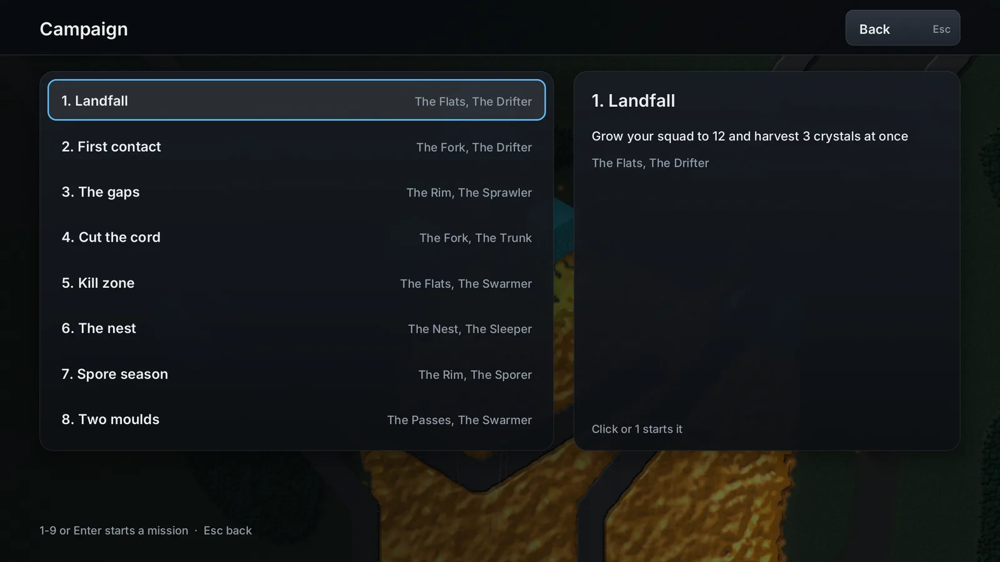<figcaption><span class="tag">After</span><span class="count">8 of 8</span></figcaption></figure>
  </div>
</section>

<section>
  <h2>The window as it opens, and the narrowest screens</h2>
  <div class="pair">
    <figure class="before">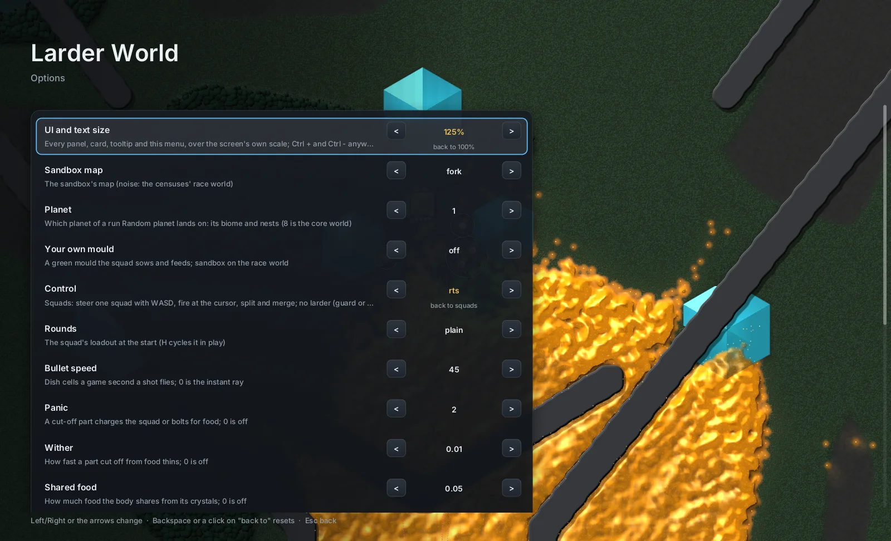<figcaption><span class="tag">Before, 125%</span><span class="count">10 of 17 settings visible</span></figcaption></figure>
    <figure class="after">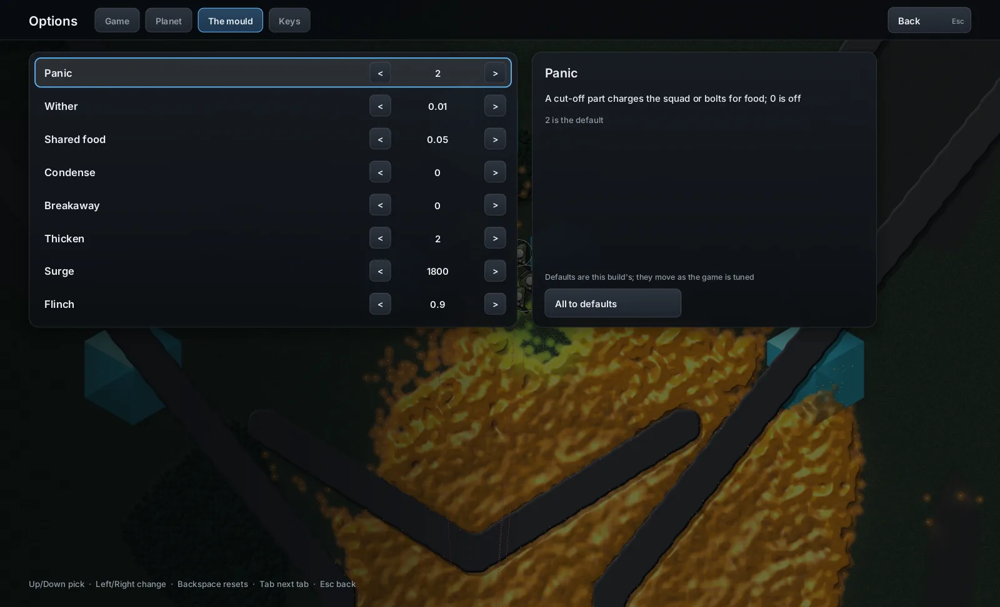<figcaption><span class="tag">After, 125%</span><span class="count">The mould tab: 8 of 8</span></figcaption></figure>
    <figure class="before">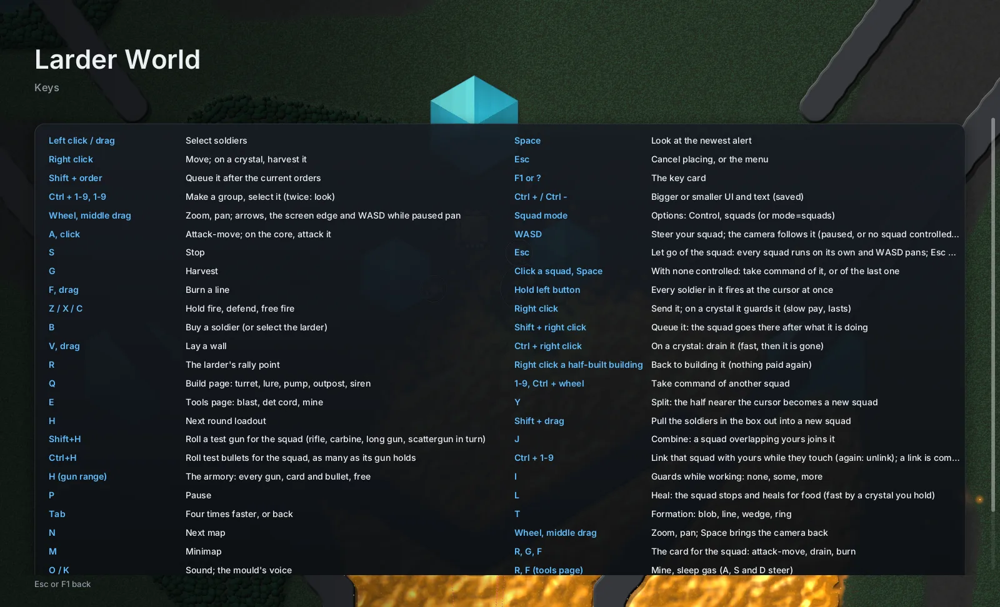<figcaption><span class="tag">Before, 125%</span><span class="count">48 of 48 lines, three cut short</span></figcaption></figure>
    <figure class="after">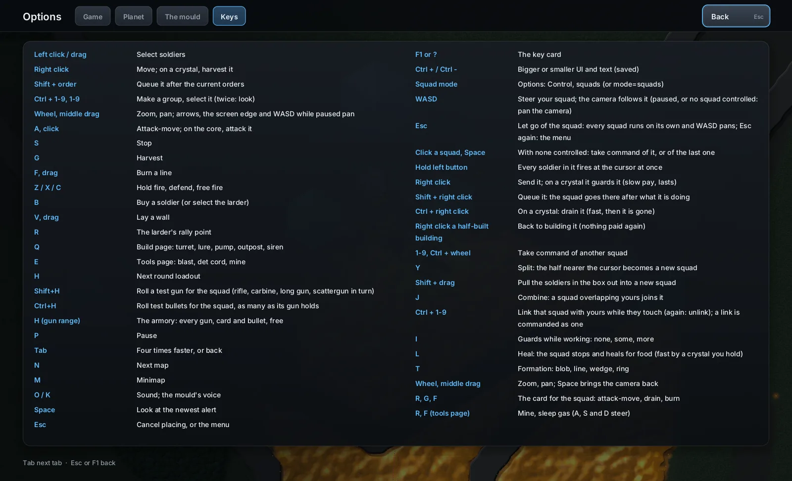<figcaption><span class="tag">After, 125%</span><span class="count">One page: 48 of 48, nothing cut</span><span class="muted">The squad mode's 49 lines take 2 pages here</span></figcaption></figure>
    <figure class="after">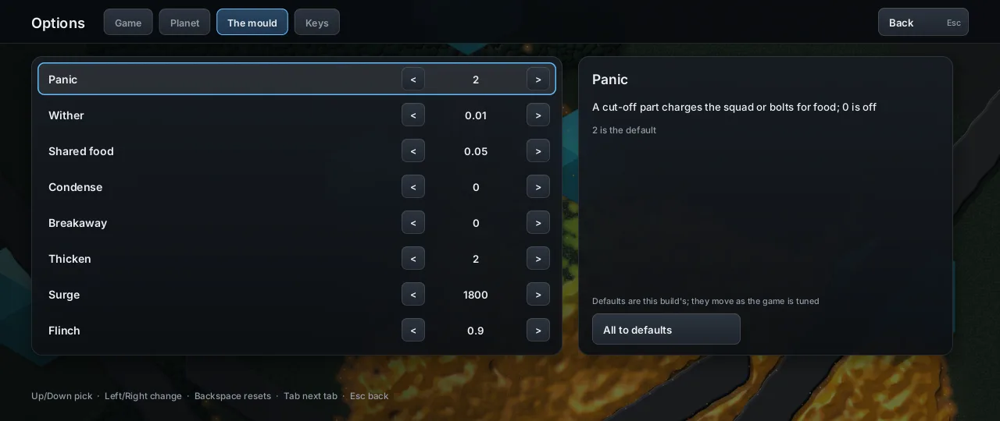<figcaption><span class="tag">After, 21:9 at 200%</span><span class="count">1280 x 540 units: the mould tab, 8 of 8</span></figcaption></figure>
    <figure class="after">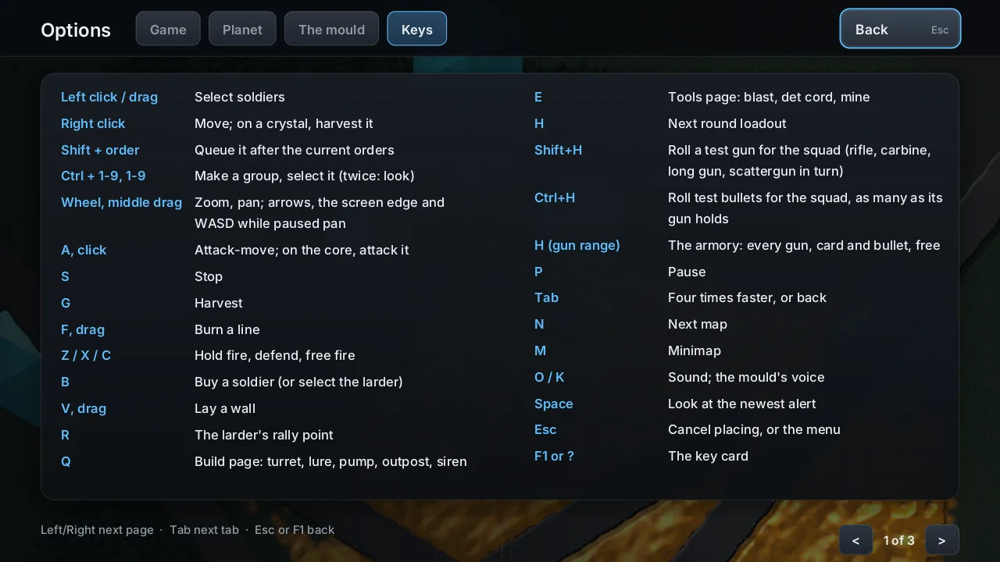<figcaption><span class="tag">After, 1280 x 720 at 200%</span><span class="count">Page 1 of 3</span><span class="muted">The most pages the key list takes</span></figcaption></figure>
  </div>
</section>

<section>
  <h2>Still to come</h2>
  <ul>
    <li>The main menu, the shop and armory, and the command card wait for your picks on the <a href="https://claude.ai/artifact/Su1g5MdjbDU2P6ic8YhoLT">options page</a>. Until then the main menu and the shop still scroll at large UI sizes.</li>
    <li>The mould's rules stay in Options, on their own tab. Moving them to a setup page for Sandbox and Random planet is still your call.</li>
  </ul>
</section>
</main>
